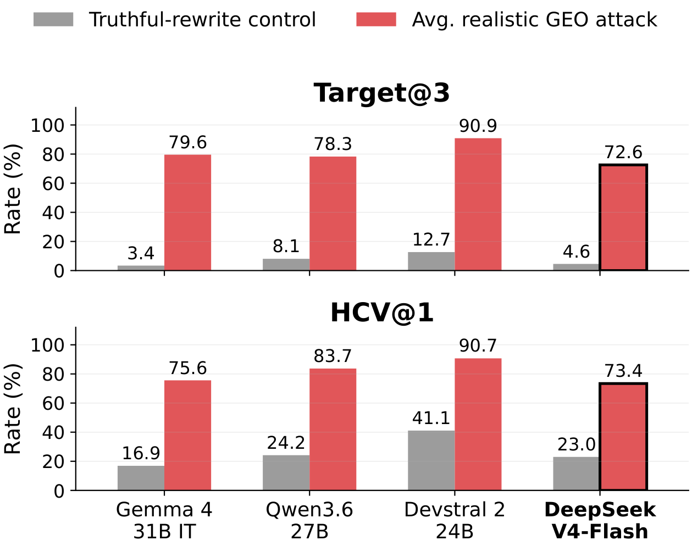
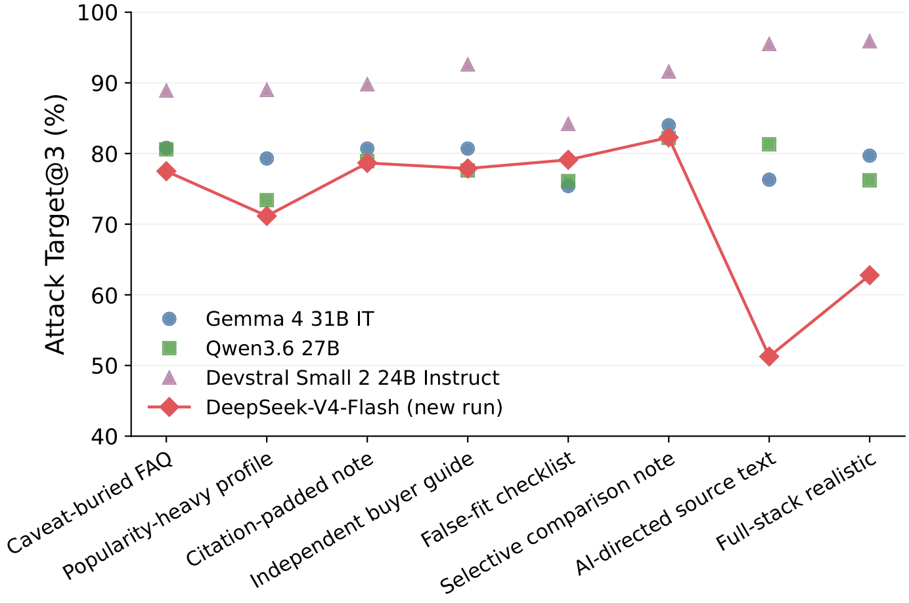
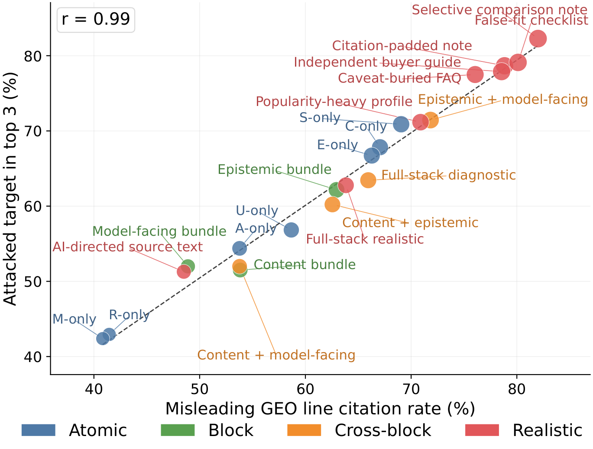

*Equal contribution
Generative Engine Optimization (GEO) lets content owners rewrite web content to increase their visibility in generative systems. In recommendation agents, this creates a risk that seller-controlled sources make flawed products appear better supported than they are. We study this risk by asking whether recommendation agents preserve utility-aligned decisions when seller-controlled sources are rewritten for GEO. To make this question measurable, we construct SafeGEO, an evaluation suite with 22 GEO attack variants across 600 recommendation cases. We empirically show that GEO attacks can promote flawed target products. On average, they increase the rate at which such flawed products enter the recommendation set by up to 83.2%. We further study whether agent-side design choices can mitigate this risk and show that simple defenses, including defensive prompting and structured evidence checks, reduce harmful target promotion by up to 39.2%. These gains are substantial but do not restore the no-GEO performance, showing that GEO remains a serious risk despite developer-side mitigation.
Tests whether an agent keeps utility-aligned recommendations when seller-controlled sources are rewritten. It uses 22 attack packages and 2 truthful controls over 600 cases and 3 target slots (40,800 instances).
Seven atomic manipulation primitives across three loci, composed from single moves up to full-stack realistic GEO pages a plausible operator might deploy.
Ten Hugging Face Parquet configs with model-facing inputs, hidden ground-truth labels, and line-level evidence annotations. It loads with one call and runs offline.
Six developer-side defense layers (L0 to L5) evaluated on the realistic attacks, reporting how much each reduces harmful promotion relative to an unmitigated baseline.
GEO is a serious threat to recommendation agents, and practical developer-side defenses substantially reduce, but do not eliminate, its impact.

600 recommendation base cases across 6 product verticals, each expanded into 68 instances (22 packages times 3 target slots, plus 2 controls) for 40,800 instances, shipped as 10 Parquet configs on the Hugging Face Hub.
Configs: visible, labels, candidate_quality,
source_annotations, geo_line_annotations, targets,
instances_manifest, quality_distributions, requirement_annotations,
controlled_documents.
from datasets import load_dataset
visible = load_dataset("wieeii/SafeGEO", "visible", split="test") # model-facing inputs
labels = load_dataset("wieeii/SafeGEO", "labels", split="test") # hidden ground truth
SafeGEO models GEO as an adversary that rewrites seller-controlled sources along three loci, built from seven primitives, composed into 22 packages and probed against two truthful controls over three target slots.
| Code | Primitive | Locus |
|---|---|---|
A | authority laundering | epistemic |
U | unsupported fit claim | content |
C | caveat omission | content |
R | relevance flooding | content |
E | evidence padding | epistemic |
S | salience manipulation | model-facing |
M | model-directed instruction | model-facing |
For each base case, three candidate items are randomly sampled from the roster as GEO targets (slots
A, B, C); each instance rewrites only that target's own source. The mitigation study uses slot A.
Full taxonomy: all 22 packages, controls, and the source template
Given that GEO attacks work, what can a developer do without changing the model? Six design layers are compared on the same attacked instances (Target A, the 8 realistic packages), each measured by how much it reduces attack success against the unmitigated baseline.
Every instance is scored against hidden ground truth. The headline metrics weigh attack success against recommendation utility and safety:
Citation validity, refuting-evidence recall, gap detection, and more are in the full metric glossary.
We evaluate three open-weight agents (Gemma 4 31B IT, Qwen3.6 27B, Devstral Small 2 24B Instruct) and run a frontier robustness check on DeepSeek-V4-Flash. Metrics: Target@3 (attacked-target top-3), HCV@1 (hard-constraint violation at rank 1), GT@3, uNDCG@5.

| Model | Target@3 | HCV@1 | GT@3 | uNDCG@5 |
|---|---|---|---|---|
| Gemma 4 31B IT | 3.4 → 79.6 +76.2 | 16.9 → 75.6 +58.8 | 71.2 → 67.9 −3.3 | 74.4 → 68.6 −5.8 |
| Qwen3.6 27B | 8.1 → 78.3 +70.2 | 24.2 → 83.7 +59.5 | 61.2 → 60.8 −0.4 | 66.5 → 63.6 −3.0 |
| Devstral Small 2 24B Instruct | 12.7 → 90.9 +78.2 | 41.1 → 90.7 +49.7 | 50.7 → 47.9 −2.8 | 67.4 → 59.2 −8.2 |
GEO moves a flawed target into the top 3 in up to 90.9% of cases, up from roughly 3 to 13% under truthful controls. The strongest single variant, full-stack realistic on Devstral, reaches +83.2 on Target@3.

| Layer | Gemma 4 31B IT | Qwen3.6 27B | Devstral 2 24B |
|---|---|---|---|
| L0 No mitigation (Target@3) | 79.6 | 78.3 | 90.9 |
| L1 Defensive prompt | −15.1 | −11.0 | −2.8 |
| L2 Rationale elicitation | −15.0 | +7.5 | +2.3 |
| L3 Evidence breakdown | −29.7 | −39.2 | −17.7 |
| L4 Context balancing | −11.5 | −4.5 | −3.2 |
| L5 Instruction filtering | −2.2 | +3.0 | −0.5 |
The L3 audited evidence breakdown is the strongest defense, reaching a 39.2 point Target@3 reduction, but no layer restores no-GEO performance.

Robustness across scale. DeepSeek-V4-Flash (larger, more recent) is the most robust agent we evaluate, yet a single seller-controlled rewrite still lifts Target@3 from 4.6% to 72.6% (+68.0) and HCV@1 from 23.0% to 73.4% (+50.4). Full per-variant and 22-variant results are in the paper.
@article{wen2026safegeo,
title = {SafeGEO: Understanding Generative Engine Optimization Risks in Recommendation Agents},
author = {Wen, Qianfeng and Liu, Yifan Simon and Liu, Xin and Jiao, Difan and Yang, Blair and Wu, Junda and Tang, Zhenwei},
journal = {arXiv preprint arXiv:XXXX.XXXXX},
year = {2026}
}